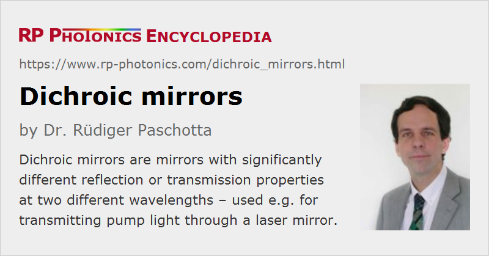

Dichroic Mirrors
Definition: mirrors with significantly different reflection or transmission properties at two different wavelengths
Alternative terms: dual-wavelength mirrors, dual-band mirrors
More general term: dielectric mirrors
German: dichroische Spiegel, dichroitische Spiegel
How to cite the article; suggest additional literature
Author: Dr. Rüdiger Paschotta
A dichroic mirror is a mirror with significantly different reflection or transmission properties at two different wavelengths. This relates to one of two possible meanings of the term dichroism.
Dichroic mirrors are applied for different purposes. Some examples:
- In a diode-pumped laser, a dichroic short-pass mirror in the resonator, placed next to the laser crystal, may be used for injecting pump light.
- In a laser with intracavity frequency doubling, a dichroic end mirror may couple out the harmonic light while fully reflecting the pump wave.
- In case of external frequency doubling, a dichroic mirror may be used as harmonic separator (see below), i.e., as a kind of wavelength-dependent beam splitter.
- In laser microscopy (fluorescence microscopy), a dichroic mirror can be used for separating the fluorescence light (containing the image information) from the pump light.
So-called harmonic separators (see Figure 1) are dichroic mirrors for separating the harmonic (frequency-doubled) beam from the pump beam, often outside the laser resonator. For that application, the two wavelengths for which the mirror needs to have very different reflectivities are so far apart from each other that it is easy to make such mirror designs.
Most dichroic mirrors are dielectric mirrors, but there are also crystalline mirrors where the multilayer structure consists of semiconductor materials. In both cases, the operation principle is that of a multilayer interference coating.
Short-pass and Long-pass Mirrors
In electronics, the terms low-pass and high-pass filter are common, where “low” and “high” refers to the frequency. In optics, where it is more common to refer to wavelengths, one uses the terms short-pass and long-pass mirror. Here, a short-pass mirror (or shortpass mirror) is one which has a high transmission at short wavelengths and high reflectance at longer wavelengths; it could also be called a high-pass filter (referring to optical frequencies).
It can be challenging to make mirrors such that the wavelength with high transmission and the wavelength with high reflectance are close together, as e.g. in Figure 2. They need more sophisticated designs and often also a higher precision of coating fabrication.
Fabrication of Dielectric Mirrors
Most dichroic mirrors are fabricated as dielectric mirrors, e.g. with electron beam deposition, ion beam sputtering (IBS) or ion-assisted deposition (IAD). Semiconductor-based dichroic mirrors are fabricated with epitaxial techniques such as MOCVD or MBE.
Depending on the case, the design of the required layer structure may be possible based on analytical considerations, possibly followed by a numerical optimization, or entirely on numerical optimization, e.g. with a Monte-Carlo method. In many cases, the design involves a compromise between the obtained optical properties, the required number of layers, and the required growth precision.
For any dielectric mirror, the reflection spectrum depends on the angle of incidence and (for non-normal incidence) also on the polarization of the input light. Only to a limited extent, mirror designs can be made such that the desired dichroic properties are achieved over some range of input angles.
As a dichroic mirror has to be transparent for at least one wavelength of interest, the quality (e.g. transmission losses) of the substrate material and possible reflections from the back side need to be considered. An anti-reflection coating on the backside can help to reduce such a reflection, and a slight wedge form of the substrate can often eliminate the effects of residual reflection.
Suppliers
The RP Photonics Buyer's Guide contains 71 suppliers for dichroic mirrors. Among them:
Questions and Comments from Users
Here you can submit questions and comments. As far as they get accepted by the author, they will appear above this paragraph together with the author’s answer. The author will decide on acceptance based on certain criteria. Essentially, the issue must be of sufficiently broad interest.
Please do not enter personal data here; we would otherwise delete it soon. (See also our privacy declaration.) If you wish to receive personal feedback or consultancy from the author, please contact him e.g. via e-mail.
By submitting the information, you give your consent to the potential publication of your inputs on our website according to our rules. (If you later retract your consent, we will delete those inputs.) As your inputs are first reviewed by the author, they may be published with some delay.
Bibliography
| [1] | T. Amotchkina et al.,“Broadband beamsplitter for high intensity laser applications in the infra-red spectral range”, Opt. Express 24 (15), 16752 (2016), doi:10.1364/OE.24.016752 |
| [2] | Design of a dichroic mirror with the RP Coating software |
See also: dichroism, mirrors, dielectric mirrors, dielectric coatings, Bragg mirrors, anti-reflection coatings, optical filters
and other articles in the category photonic devices
|  |
If you like this page, please share the link with your friends and colleagues, e.g. via social media: 


These sharing buttons are implemented in a privacy-friendly way! |
2020-07-10
What is the difference between dichroic and dielectric?
Answer from the author:
The term dichroic denotes the function – treating different wavelengths differently – while dielectric states what materials are used for a mirror.